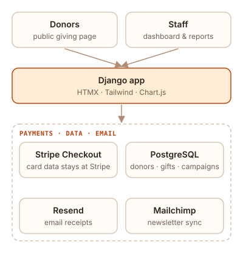
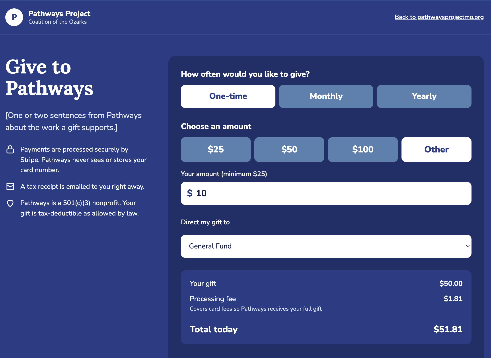

The problem
Pathways took donations through Zeffy. It worked, but their donor data lived on someone else's platform, and part of every gift went to Zeffy instead of the mission. They wanted their own system: their data, their donor relationships, and more of each donation going where donors meant it to go.
What I'm building
- Public giving page: one-time and recurring donations through Stripe Checkout, so card data never touches our servers.
- Donor records: donors, gifts, and campaigns in PostgreSQL, with Django handling authentication and access control.
- Automated email: receipts sent through Resend, and opted-in donors synced to Pathways' existing Mailchimp list.
- Admin dashboard: donor management and giving reports for staff and the board.


Key decisions
- Payment processor stays swappable. PayPal and Venmo are planned for later, so payments are stored with a processor name and ID instead of Stripe-specific columns.
- Stripe's hosted checkout. Card data stays with Stripe, which keeps security and compliance work small for an organization without an IT team.
- Server-rendered pages with HTMX. It's simple enough for the next volunteer developer to pick up and maintain.
Where it stands
The donation page is nearly done, and the admin tools are scaffolded and in progress. The goal is to launch ahead of Giving Tuesday.